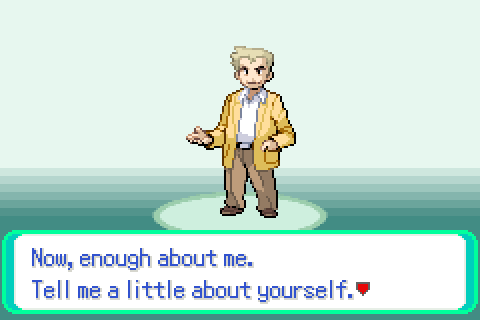
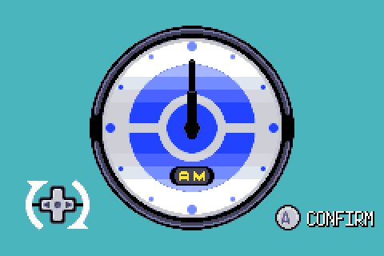
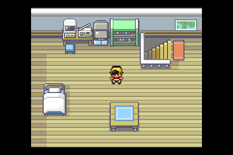
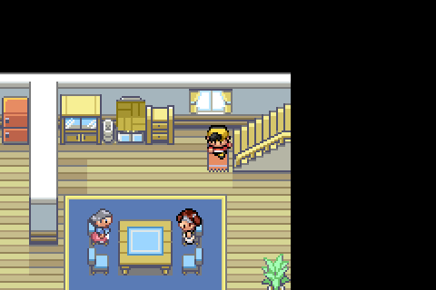
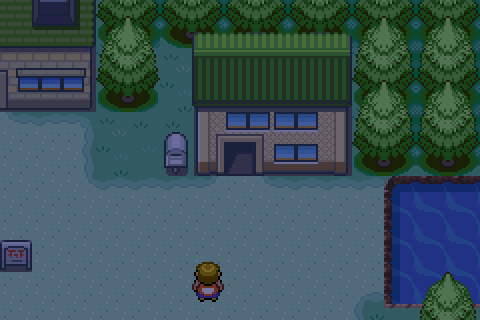
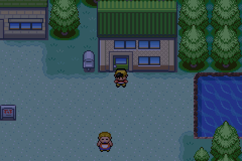
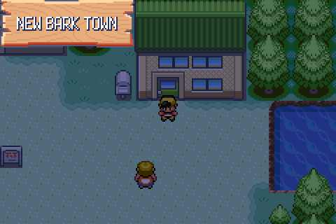

No tester observation behind this one: it is the harness note D110 left, that
scripts/newgame.txt no longer reached the overworld. Captures are raw
mGBA frames taken by tools/playtest/playtest.py. Full reasoning in
docs/port/decisions.md, section D113.
The old newgame.txt was a literal list of
press lines with counted gaps, tuned in D107 to how long the
CrystalDust title and Oak speech took. D109's follower work stretched the intro,
the counts ran out before the bedroom, and the trailing shot and
where pairs fired mid-intro.
until CB2_NewGame TIMEOUT frames=30000 mapGroup = 0 mapNum = 0

The first rewrite mashed A+UP together, on the
reasoning that A answers everything and UP picks YES on the two prompts that
default to NO — the wall clock's Is this the correct time? and the
Oak speech's So it's <name>?, whose NO drops into the naming
screen. A yes/no menu handed both keys on the same frame takes the A and keeps
the NO, so the clock asks again for ever: thirty thousand frames, callback2 never
leaving the wall clock.

mash A+UP: still the clock.Hence mashalt, a second mashed key tapped in the other half of
the mash period, so A and UP never share a frame.
mash A 20 / mashalt UP until
gMain.callback2 reaches CB2_NewGame, then
CB2_Overworld, then the fade. newbark.txt waits on
untilmap and answers mum with advance;
afterintro.txt's hundred and fifty blind press A lines
are gone.

newgame.txt: the bedroom, map 1.1, fade finished.
newbark.txt: downstairs, mum's speech answered.
until CB2_NewGame ok frames=3569 until CB2_Overworld ok frames=8 until fade ok frames=22 map = 1.1 ... 35 beats run, 0 failed
gmake RELEASE=1 is green at 28,830,912 bytes used,
85.92% of the cart. D104's save gate is a script now,
tools/playtest/scripts/saveload.txt: save from the start menu,
reset, CONTINUE. LTO renames file-local statics to
name.lto_priv.N, which is why advance used to die on
an unknown symbol against the release ROM.

